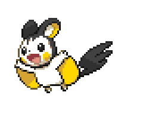

Ik heb van oktober 2022 tot en met mei 2023 bij kruidvat in Almere Buiten gewerkt als vulploegmedewerker.
Over mij
Ik hou van gamen, programmeren en schrijven. Ik wil graag mijn eigen games maken.
Ik begon toen ik 9 was met programmeren in scratch. Een paar jaar later begon ik met het leren van python.
Toen ik op de middelbare school zat begon ik te experimenteren met Unity. Zo heb ik mijn eerste game gemaakt.
Toen ik klein was kocht mijn vader een Wii. Hier is mijn liefde voor gamen begonen en dit is ook een reden waarom ik graag games wil maken.
Ik speelde vaak met mijn vader, moeder en zusje Super Mario bros. Wii, Kirby Return to Dream Land, Mario Kart Wii, en Mario & Sonic op de olympische spelen.
Ik begon met schrijven toen ik 12 was. Toen moest ik voor school een kort verhaaltje schrijven en ik vond dat best leuk.
Ik begon met kleine verhaatjes. In 2020 ontdekte ik ai dungeon, een website waar je een avontuur beleeft dat wordt gemaakt door jou en een ai.
Hiermee kon ik veel langere en betere verhalen schrijven. Tegenwoordig schrijf ik al mijn verhalen zelf.
Werkervaring
Ik heb van juli 2024 tot en met oktober 2024 bij Walibi Holland gewerkt bij de afdeling Rides & Parking. Hier was ik verantwoordelijk voor het controleren van de gasten en het bedienen van de atractie.
Ik doe vrijwiligerswerk bij Coderdojo in Almere Stad. Hier help ik kinderen met programmeren in scratch en python.
Opleidingen
Ik heb Havo gedaan in het Montessori Lyceum Flevoland. Hier heb ik het E&M profiel gevolgd en mijn diploma gehaald.
Ik volg momenteel de MBO opleiding game development op het ROC van Flevoland.
Hobby's
Ik hou van gamen, mijn favoriete game is Kirby Return to Dream Land. Ik speel graag platformers en adventure games, zoals Super Mario Bros. en The Legend of Zelda. Ook speel ik veel Mario kart en Super Smash Bros.
Ik programeer veel in C++, C# en Python. Voor mijn games gebruik in Unity.
- Mijn favoriete Pokémon is Emolga. 
- Ik vind treinen cool, vooral stoomtreinen.
- Ik schrijf verhalen.